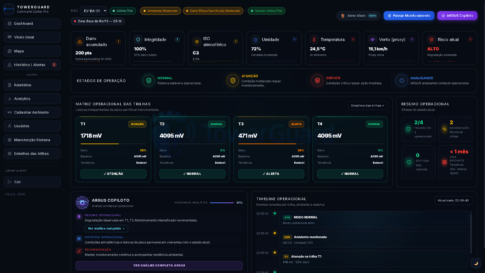
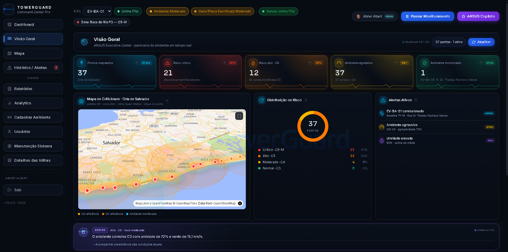
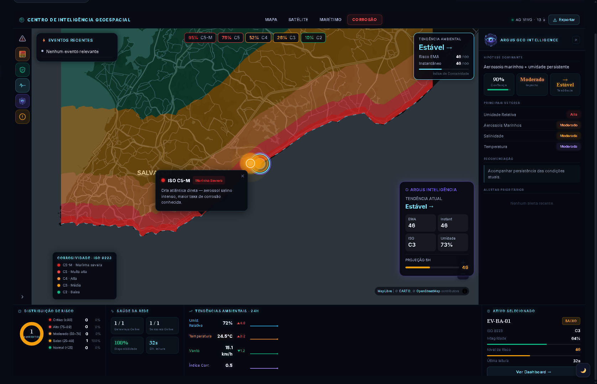
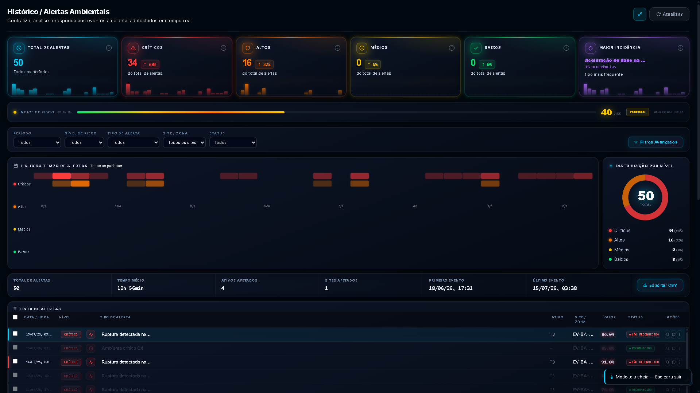
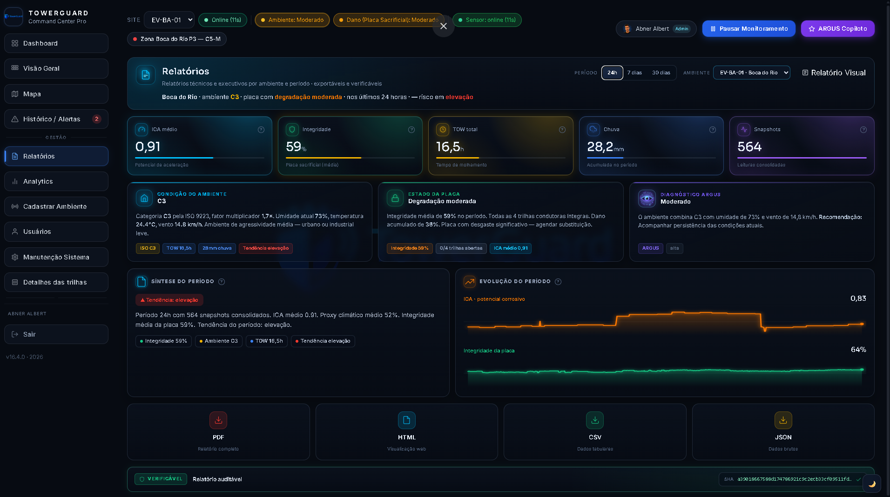
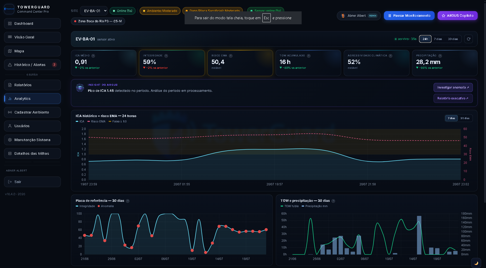
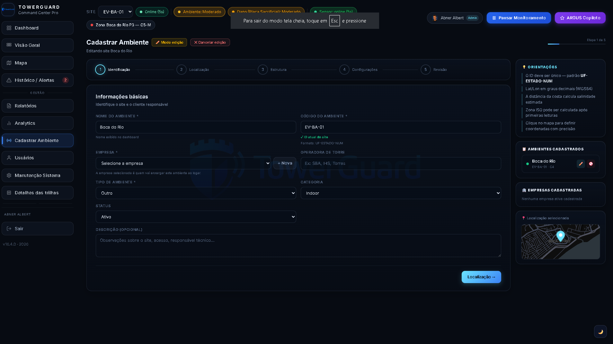
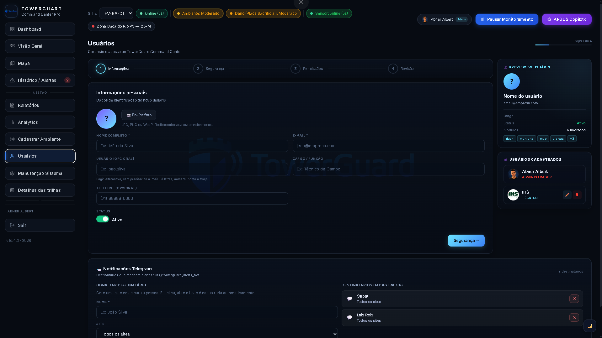
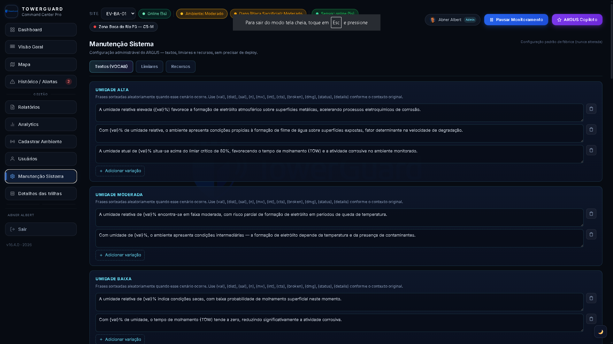
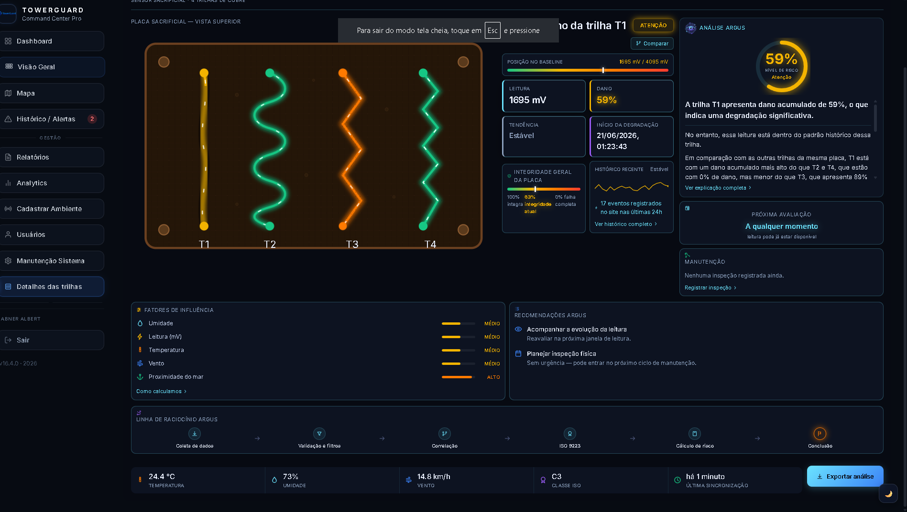

Suporte Técnico · Redes & Telecomunicações · Analista de Dados · Fundador de IoT.
Mais de 8 anos entre atendimento ao usuário, suporte técnico de campo e infraestrutura — hoje também à frente do meu próprio projeto de monitoramento IoT.
Minha trajetória combina mais de 8 anos de atendimento ao público (setor financeiro, transporte público e telecomunicações), suporte técnico de campo com instalação de hardware, e operação de NOC com análise de indicadores e validação de laudos de infraestrutura.
Estou concluindo o curso superior em Análise de Sistemas de Computação e sou fundador do TowerGuard, projeto próprio de monitoramento IoT para corrosão atmosférica — onde defino arquitetura, hardware e requisitos técnicos do sistema. É essa combinação entre vivência prática de suporte e visão técnica de sistemas que trago para qualquer time.
Projeto próprio de IoT para monitoramento de corrosão atmosférica em torres de infraestrutura. Responsável pela definição de arquitetura, hardware (sensores, nós ESP32 LoRa, gateway 4G) e requisitos técnicos do sistema, do sensor ao dashboard.
Organização de documentos técnicos e relatórios fotográficos. Identificação, registro e acompanhamento de não conformidades, propondo ações corretivas junto às equipes de engenharia e execução.
Serviços de NOC para infraestrutura de telecom: validação de laudos técnicos, relatórios e suporte a técnico de campo. Monitoramento de indicadores e gestão de rotina de qualidade preventiva.
Atendimento ao cliente em contexto de telecomunicações, resolução de solicitações e suporte a usuários finais.
Instalação e manutenção de sistemas de CFTV e alarmes, configuração de portaria eletrônica.
Atendimento ao público, confecção de cartões de transporte público e recargas.
Atendimento ao cliente no setor financeiro e suporte geral a produtos de cartão de crédito.
Monitoramento contínuo de agressividade ambiental para infraestrutura. Substituição da observação pontual por leitura estruturada, baseada em evidência e orientada à decisão.
Em contextos operacionais, o acompanhamento das condições ambientais costuma ser fragmentado e reativo: inspeções esporádicas, sem histórico contínuo, sem capacidade de antecipação.
O TowerGuard converte dados ambientais e sinais correlatos em base contínua de monitoramento — transformando observação pontual em leitura interpretável e orientada à decisão.
Variáveis ambientais e sinais proxy em campo
Comunicação distribuída com backend próprio
Recebimento, tratamento e persistência de dados
Dashboard analítico com indicadores operacionais
Análise de tendência e recomendação via ARGUS Copilot
Painel operacional com indicadores de dano acumulado, integridade, categoria ISO 9223, umidade, temperatura e risco atual, além da matriz de trilhas condutoras e assistente ARGUS Copiloto.

Dashboard principal com KPIs, matriz de trilhas e ARGUS Copiloto
Painel de síntese com leitura consolidada por ponto monitorado: pontos mapeados, risco crítico/alto, mapa de criticidade da orla e distribuição de risco por zona ISO.

Visão Geral com mapa de criticidade e distribuição de risco
Visualização georreferenciada por faixas de corrosividade ISO 9223 (C2 a C5-M), com módulo ARGUS Geo Intelligence apontando hipótese dominante, vetores de influência e recomendação.

Mapa geoespacial de corrosividade com inteligência ARGUS
Central de alertas com totais por severidade, linha do tempo de ocorrências, distribuição por nível de risco e lista detalhada de eventos com status de reconhecimento.

Histórico e central de alertas ambientais
Relatório por ambiente e período com ICA médio, integridade, tempo de molhamento e diagnóstico automático do ARGUS, exportável em PDF, HTML, CSV e JSON com hash de verificação.

Relatório técnico com exportação verificável (PDF/HTML/CSV/JSON)
Séries temporais de ICA e risco EMA nas últimas 24h, além de gráficos de referência da placa sacrificial e evolução de TOW/precipitação ao longo de 30 dias.

Analytics com séries históricas de ICA, risco EMA e precipitação
Fluxo guiado em 5 etapas para cadastro de novo site de monitoramento, com validação de ID, geolocalização e orientações contextuais para o operador.

Cadastro de ambiente com fluxo assistido em etapas
Cadastro de usuários com definição de cargo, módulos liberados e status, além de gestão de destinatários de alertas via bot do Telegram.

Gestão de usuários e notificações via Telegram
Painel administrativo para editar textos, variações de linguagem e limiares usados pelo ARGUS na geração automática de diagnósticos, sem necessidade de novo deploy.

Configuração administrável dos textos e limiares do ARGUS
Visualização individual da placa sacrificial com leitura por trilha, histórico de integridade, fatores de influência e linha de raciocínio do ARGUS até a recomendação final.

Diagnóstico detalhado por trilha com raciocínio do ARGUS
Mais de 8 anos de experiência real de atendimento e suporte, somados a uma formação técnica e a um projeto próprio de tecnologia — uma combinação pouco comum entre vivência de campo e visão técnica.
Curso Superior de Tecnologia (CST) · UNIASSELVI
Curso Técnico · SENAI CIMATEC
FIAP
Busco oportunidades nas áreas de suporte técnico, TI, redes e tecnologia, onde possa aplicar minha experiência real de atendimento, minha formação técnica e minha vivência prática com hardware e sistemas IoT. Tenho interesse especial em funções que unam contato direto com o usuário e resolução técnica de problemas.
Sigo concluindo o curso de Análise de Sistemas de Computação e desenvolvendo o TowerGuard como projeto pessoal, mantendo minha atuação técnica em constante evolução.